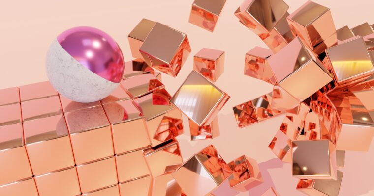
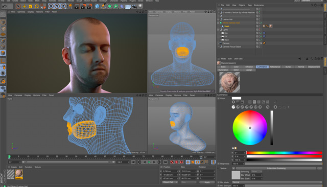
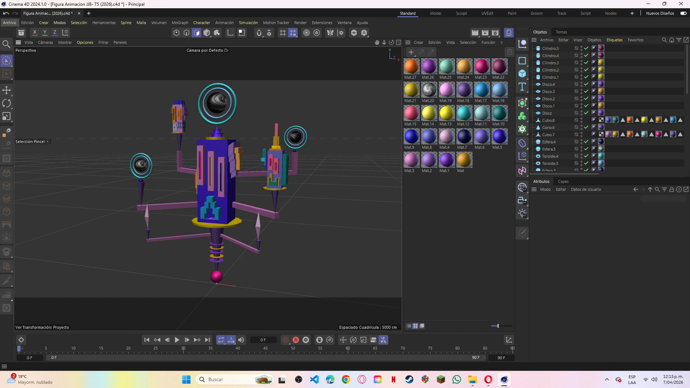

Como diseñador gráfico enfocado en animación y 3D, puedo ofrecer soluciones visuales que combinan creatividad, identidad y movimiento. Busco crear piezas que no solo se vean bien, sino que transmitan un mensaje claro y generen impacto visual. Desde animaciones para contenido digital hasta composiciones tridimensionales y dirección estética, mi objetivo es aportar una visión fresca, adaptable y enfocada en comunicar de manera efectiva a través del diseño.
Donde los programas de diseño, con herramientas increibles e inteligentes. se manifiestan en un plano para diseñar objetos visuales atractivos.
Cinema 4D se convirtió en una herramienta fundamental dentro de mi proceso creativo. Gracias a este programa he podido explorar el modelado 3D, la animación, el texturizado y la iluminación para construir escenas más dinámicas y envolventes.Su versatilidad me ha permitido desarrollar proyectos donde el diseño gráfico y el motion graphics se unen para generar contenido visual moderno, atractivo y funcional, adaptándome tanto a propuestas minimalistas.
La animación me permitió entender el diseño más allá de lo visual. Cada proyecto ha sido una oportunidad para transformar ideas en movimiento, creando piezas que comunican emociones, ritmo y narrativa. A través de diferentes trabajos he desarrollado habilidades en composición, timing, iluminación y dirección visual, aprendiendo a construir experiencias que conecten con las personas y den vida a conceptos que antes solo existían en papel.